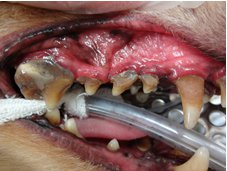

** Topic 2013年 6月**

 食べられない？！
食べられない？！
『いつも、フードを催促するのに、ここのところあまり食べないな?？』
食欲不振は、さまざまな病気でみられる症状です。
嘔吐、下痢、疼痛など、他に症状がある場合は、それらに対処して、改善されることと思います。
歯周病、口内炎など、口腔内に問題があるときの食欲不振は、いくつかの特徴がみられます。
1. フードを口にするが、一口二口で、急にやめる。
2. においを嗅いだり、興味は示すが、食べるのに躊躇するように、フードの前で、とどまる。
3. 食べるのに、時間がかかる。
4. 休みながら食べる。
5. 食べこぼす。
などは、比較的わかりやすい、症状だと思います。
特に、高齢なイヌやネコは、年齢のせいで食べられないのではなく、口が痛くて食べられないことも、多くあります。歯の治療は、多くが麻酔を必要とします。そのため、高齢な患者さんのリスクは大きくなります。しかし、きちんとケアーをしてあげることで、治療を受けられます。当院で、歯科治療を受ける患者さんは、イヌでは、８歳?１２、１３歳ぐらい、ネコでは１０歳?１４歳ぐらいで受診される方が多いです。
歳だからね、とあきらめずに、気になる症状があるときは、ぜひ、ご相談ください。いつまでも、美味しくごはんが食べられますように＊＊＊
８歳のミニチュアダックスフントさん。
頬の腫れが気になり、来院されました。重度の歯周病でした。
